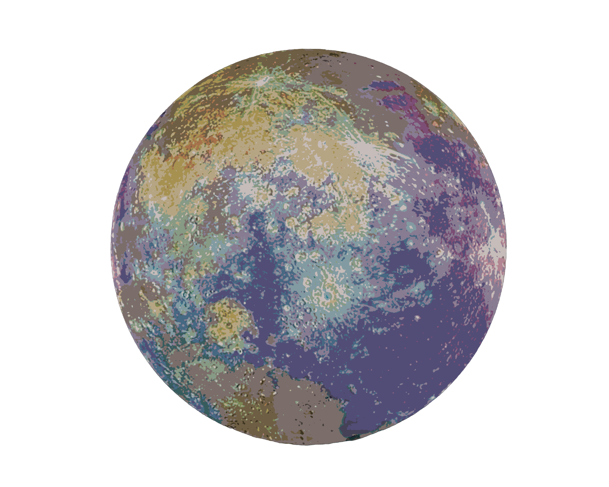

Your essential purpose in life is to make contact with, and connections between, whatever or whoever you regard as important - which is more or less everything! This you do because at heart you find everything interestung un some way or another. You are very alive to the variety of animate and inanimate objeccts on this planet, and you want to get to know as many of them as possible. As a rule though, 'get to know' is all you want to do.
As long as you have a 'taste; you are satisfied; getting deeply involved is not really to your taste, and you will flip like a coin from one interest or person to another as it suits you. There may be other parts of yout personality/birth chart that need or are attracted to more intimate situations, in which case a more profound sense of human interaction will be asked of you.
Like the many facets of life that you are acquainted with, you are able to turn your hand to many tasks and skills; indeed, it is your hands, as well as your quick mind and wits, that are your most excellent tools. Your are, or should be, the communicator. There is nothing like a Gemini for keeping itself, the world and society in touch with each other and with what is happening.
As long as you have a 'taste; you are satisfied; getting deeply involved is not really to your taste, and you will flip like a coin from one interest or person to another as it suits you. There may be other parts of yout personality/birth chart that need or are attracted to more intimate situations, in which case a more profound sense of human interaction will be asked of you.
Like the many facets of life that you are acquainted with, you are able to turn your hand to many tasks and skills; indeed, it is your hands, as well as your quick mind and wits, that are your most excellent tools. Your are, or should be, the communicator. There is nothing like a Gemini for keeping itself, the world and society in touch with each other and with what is happening.